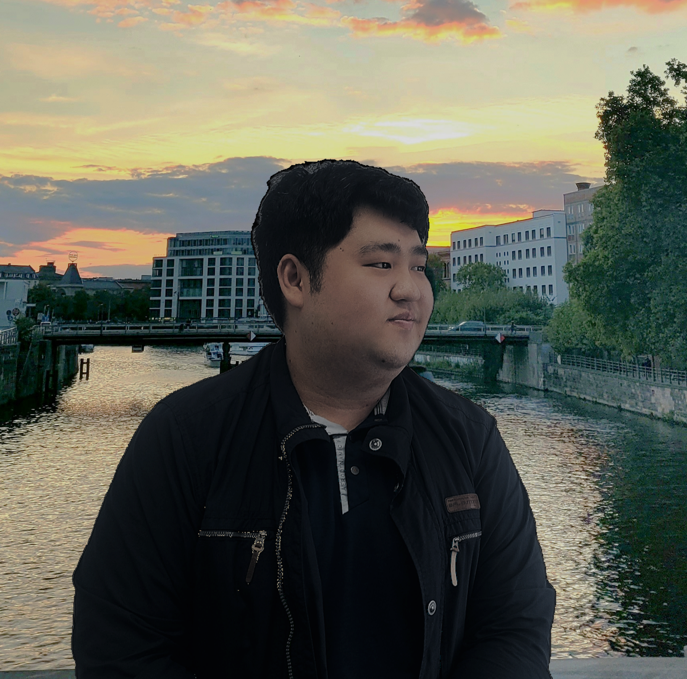

About Me

Hello, I’m now a Ph.D. Student in School of Copmuting, KAIST. I am currently part of the Human-Computer Interaction Lab (HCIL), advised by Prof. Geehyuk Lee.
I am recently interested in discovering various Haptic Devices for VR and AR devices or Sensing Techniques for more immersive and interesting user experiences.
Research Interests
Input Devices
Exploring more convenient and useful new input devices.
Haptics
Providing more diverse and realistic haptic feedback, and exploring human perception models of haptics.
VR/AR
Making VR/AR/XR environments more immersive and realistic
News
Publications
Loading publications...
Tip: 로컬에서 file://로 열면 JSON 로딩이 막힐 수 있어요. (GitHub Pages 등) 웹서버로 띄우면 정상 동작합니다.